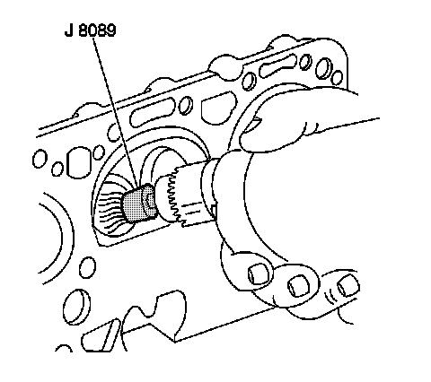
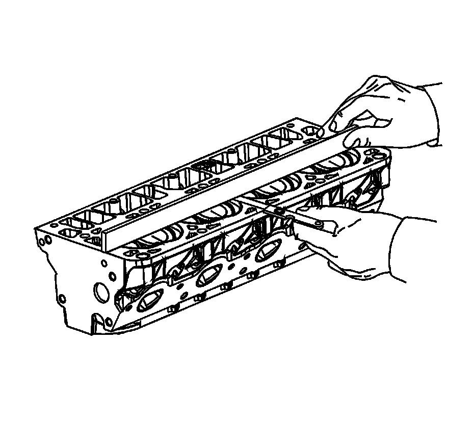
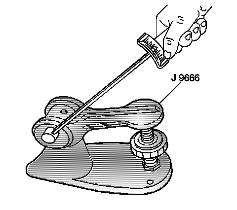

50. Cylinder Head Cleaning and Inspection
Cylinder Head Cleaning and Inspection
Tools Required
^ J 8089 Carbon Removal Brush
^ J 9666 Valve Spring Tester

Caution: Refer to Safety Glasses Caution.
Important:
^ When cleaning a cylinder head in a thermal type oven, do not exceed 204°C (400°F).
^ Be careful not to scuff the chamber.
Clean the following components:
^ Use the J 8089 in order to remove the carbon from the combustion chambers.
^ Gasket surfaces
Refer to Replacing Engine Gaskets.
^ Valve stems and heads on a buffing wheel
^ Bolt hole threads
Remove all dirt, debris, or threadlocking material from the bolt holes.
1. Inspect the cylinder head for the following conditions:
1. Cracks in the exhaust ports and combustion chambers
2. External cracks in the water chambers
3. Gasket surfaces for excessive scratches or gouging
Refer to Replacing Engine Gaskets.
4. Bolt hole threads for debris or damaged threads
Refer to Thread Repair or Thread Repair Specifications.

2. Inspect the cylinder head for warpage. Refer to Engine Mechanical Specifications.

3. Use the J 9666 in order to measure the valve spring tension. Refer to Engine Mechanical Specifications.